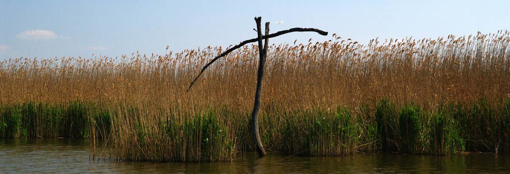

A Tisza-tó
A Tisza-tó földrajza
Az Alföld északi részén, Heves megye délkeleti szélén, Borsod-Abaúj-Zemplén, Heves megye és Jász-Nagykun-Szolnok megye határán fekszik. Területén mozaikosan váltakoznak a nyílt vízfelületek, szigetek, holtágak, sekély csatornák. Hossza 27 km, átlagos mélysége 1,3 méter, legmélyebb pontján 17 méter. 43 km2-nyi sziget található benne.
1973-ban építették fel a Kiskörei Erőművet a duzzasztógáttal a tiszai áradások szabályozása és az Alföld jobb vízellátása végett. Feltöltése az 1990-es években fejeződött be. A tónak mára kialakult az ökológiája, madárrezervátum is működik benne. 1999 óta a Hortobágyi Nemzeti Park bemutató területeként az UNESCO Világörökség része.